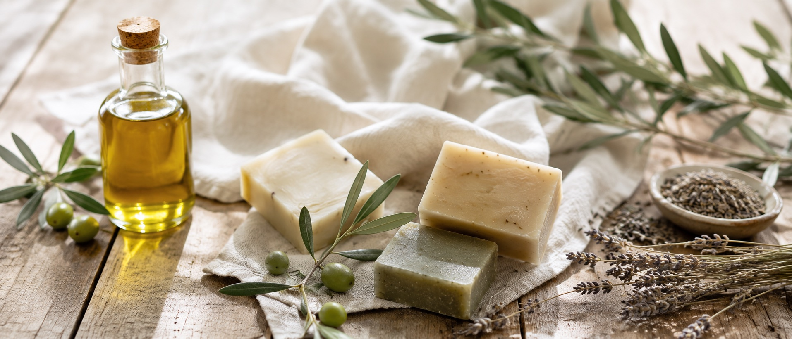
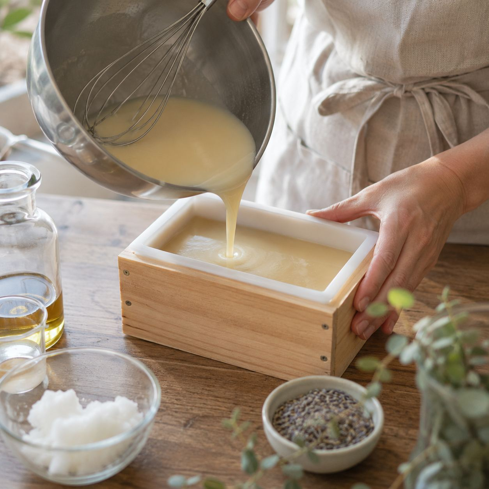

て、しごと
オリーブ石鹸
全成分配合量の多い順・名前を押すと説明が開きます
石ケン素地
油と、水酸化ナトリウムを合わせてできる、石けんのもと。
オリーブ果実油
オリーブの実からとった油。
ヤシ油
ココヤシの実からとった油。
グリセリン
石けんを作るときに、油から自然にできる成分。
て、しごと｜2人で作る、石鹸の小さな工房
入っているものは、すべてラベルに書いています。むずかしい成分の名前には、ひと言の説明を添えました。迷ったときに、自分で判断できるように。
合成香料・着色料・保存料は使っていません。ハーブ石鹸の香りは、ラベンダーの精油です。

て、しごと
全成分配合量の多い順・名前を押すと説明が開きます
油と、水酸化ナトリウムを合わせてできる、石けんのもと。
オリーブの実からとった油。
ココヤシの実からとった油。
石けんを作るときに、油から自然にできる成分。
すべての成分を、パッケージとこのサイトに載せています。名前だけでは分かりにくいものには、説明を添えます。
工房の様子や作る工程を、そのまま発信しています。
すべての肌に合うとは言いません。心配な方には、腕の内側などで試してからのご使用をおすすめしています。

作っているのは、2人の小さな工房です。一度に作る量を少なくして、木の型に流し、風通しのよい棚で4週間ほど寝かせてから、ひとつずつ確かめて包みます。
大量生産では難しい、素材へのこだわりを大事にしたくて、この工房を始めました。
作り方を見る肌に合うか、香りが好みか。30gのミニサイズで確かめてから選べます。